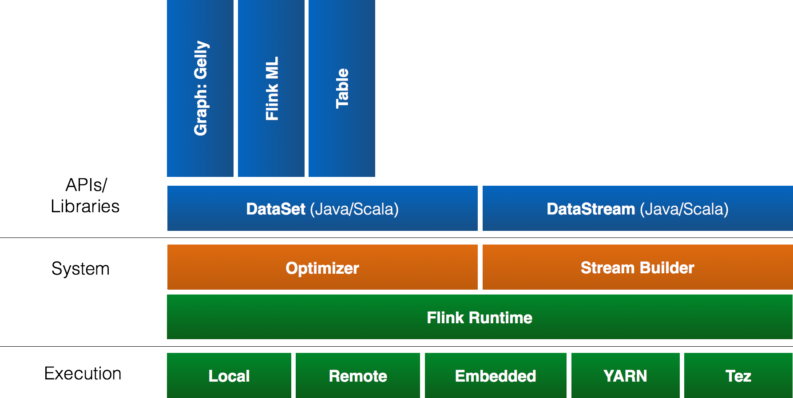

本文档是针对 Apache Flink 1.1-SNAPSHOT 版本的，当前还是开发版本，这也是 Apache Flink 下一个即将到来的主版本。
Apache Flink 是一个开源的分布式流处理和批处理系统。不过 Flink 核心是一个流处理引擎，提供了分布式，高可用， 具备容错性的流处理平台。同时，Flink 在流处理引擎上构建了批处理引擎，原生支持了迭代计算、内存管理和程序优化。
如果你想要开始编写自己的第一个程序，请前往快速起步，然后查阅 DataSet API 指南 或是 DataStream API 指南。
这是 Flink 技术栈的一个总览。点击任意一个组件可以查看相应的文档页面。
